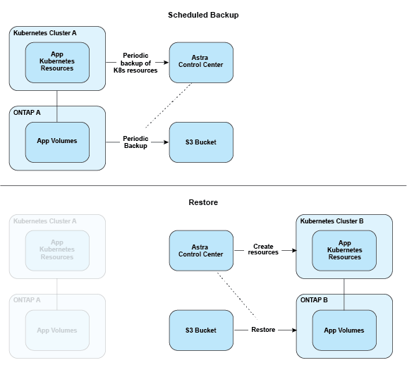

发行说明
发行说明
数据保护
 建议更改
建议更改
了解 Astra 控制中心提供的数据保护类型，以及如何以最佳方式使用它们来保护您的应用程序。
快照，备份和保护策略
快照和备份均可保护以下类型的数据：
-
应用程序本身
-
与应用程序关联的任何永久性数据卷
-
属于应用程序的任何资源项目
snapshot 是应用程序的时间点副本，它与应用程序存储在同一个已配置卷上。通常速度较快。您可以使用本地快照将应用程序还原到较早的时间点。快照对于快速克隆很有用；快照包括应用程序的所有 Kubernetes 对象，包括配置文件。快照对于克隆或还原同一集群中的应用程序非常有用。
_backup_基于快照。它存储在外部对象存储中、因此、与本地快照相比、创建速度可能会较慢。您可以将应用程序备份还原到同一集群，也可以通过将应用程序备份还原到其他集群来迁移应用程序。您还可以选择较长的备份保留期限。由于备份存储在外部对象存储中，因此在发生服务器故障或数据丢失时，备份通常比快照提供更好的保护。
保护策略 _ 是一种通过根据您为应用程序定义的计划自动创建快照和 / 或备份来保护应用程序的方法。此外、您还可以通过保护策略选择要在计划中保留多少个快照和备份、并设置不同的计划粒度级别。使用保护策略自动执行备份和快照是确保每个应用程序根据组织的需求和服务级别协议(Service Level Agreement、SLA)要求进行保护的最佳方式。

|
You can't be Fully protected until you have a recent backup 。这一点非常重要，因为备份存储在对象存储中，而不是永久性卷。如果发生故障或意外事件会擦除集群及其关联的永久性存储，则需要备份才能恢复。快照无法让您恢复。 |
不可配置的备份
不可变备份是指在指定时间段内无法更改或删除的备份。在创建不可更改的备份时、Astra Control会检查以确保您使用的存储分段是一次写入多次读取(Write on时 读取多次、WORM)存储分段、如果是、则会确保备份在Astra Control中不可更改。
Astra Control Center支持使用以下平台和存储分段类型创建不可配置的备份：
-
Amazon Web Services使用配置了S3对象锁定的Amazon S3存储分段
-
使用配置了S3对象锁定的S3存储分段的NetApp StorageGRID
使用不可配置备份时、请注意以下事项：
-
如果备份到不受支持的平台中的WORM存储分段或备份到不受支持的存储分段类型、则可能会出现无法预测的结果、例如、即使已过保留时间、备份删除也会失败。
-
Astra Control不支持数据生命周期管理策略、也不支持手动删除用于不可变备份的存储分段上的对象。确保存储后端未配置为管理Astra Control快照或备份数据的生命周期。
克隆
_cloner_是应用程序、其配置及其永久性数据卷的精确副本。您可以在同一个 Kubernetes 集群或另一个集群上手动创建克隆。如果需要将应用程序和存储从一个 Kubernetes 集群移动到另一个 Kubernetes 集群，则克隆应用程序非常有用。
在存储后端之间进行复制
使用Astra Control、您可以使用NetApp SnapMirror技术的异步复制功能、以低RPO (恢复点目标)和低RTO (恢复时间目标)为应用程序构建业务连续性。配置后、应用程序便可将数据和应用程序更改从一个存储后端复制到另一个存储后端、复制到同一集群上或复制到不同集群之间。
您可以在同一ONTAP集群或不同ONTAP集群上的两个ONTAP SVM之间进行复制。
Astra Control会将应用程序Snapshot副本异步复制到目标集群。复制过程包括SnapMirror复制的永久性卷中的数据以及受Astra Control保护的应用程序元数据。
应用程序复制与应用程序备份和还原在以下方面有所不同：
-
应用程序复制：Astra Control要求源和目标Kubernetes集群(可以是同一集群)可用并进行管理、并将其各自的ONTAP存储后端配置为启用NetApp SnapMirror。Asta Control创建策略驱动型应用程序快照并将其复制到目标存储后端。NetApp SnapMirror技术用于复制永久性卷数据。要进行故障转移、Astra Control可以在目标Kubernetes集群上重新创建应用程序对象、并在目标ONTAP 集群上创建复制的卷、从而使复制的应用程序联机。由于目标ONTAP集群上已存在永久性卷数据、因此Astra Control可以为故障转移提供快速恢复时间。
-
应用程序备份和还原：备份应用程序时、Astra Control会创建应用程序数据的快照并将其存储在对象存储分段中。需要还原时、必须将存储分段中的数据复制到ONTAP 集群上的永久性卷。备份/还原操作不要求二级Kubernetes或ONTAP集群可用并进行管理、但额外的数据复制可能会导致还原时间较长。
要了解如何复制应用程序、请参见 "使用SnapMirror技术将应用程序复制到远程系统"。
下图显示了计划的备份和还原过程与复制过程的对比情况。
备份过程会将数据复制到S3存储分段、并从S3存储分段进行还原：

另一方面、复制是通过复制到ONTAP来完成的、然后故障转移会创建Kubrenetes资源：

许可证已过期的备份、快照和克隆
如果许可证过期、只有当要添加或保护的应用程序是另一个Asta Control Center实例时、您才能添加新应用程序或执行应用程序保护操作(例如快照、备份、克隆和还原操作)。